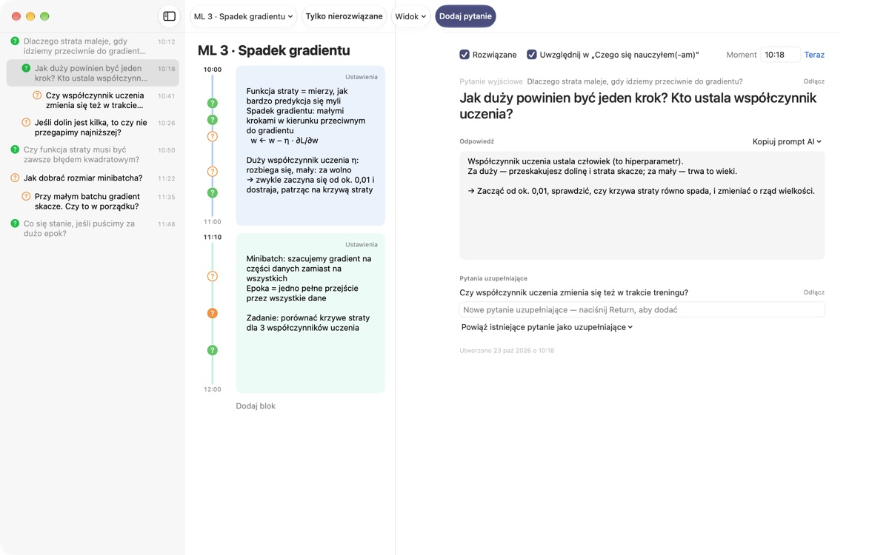
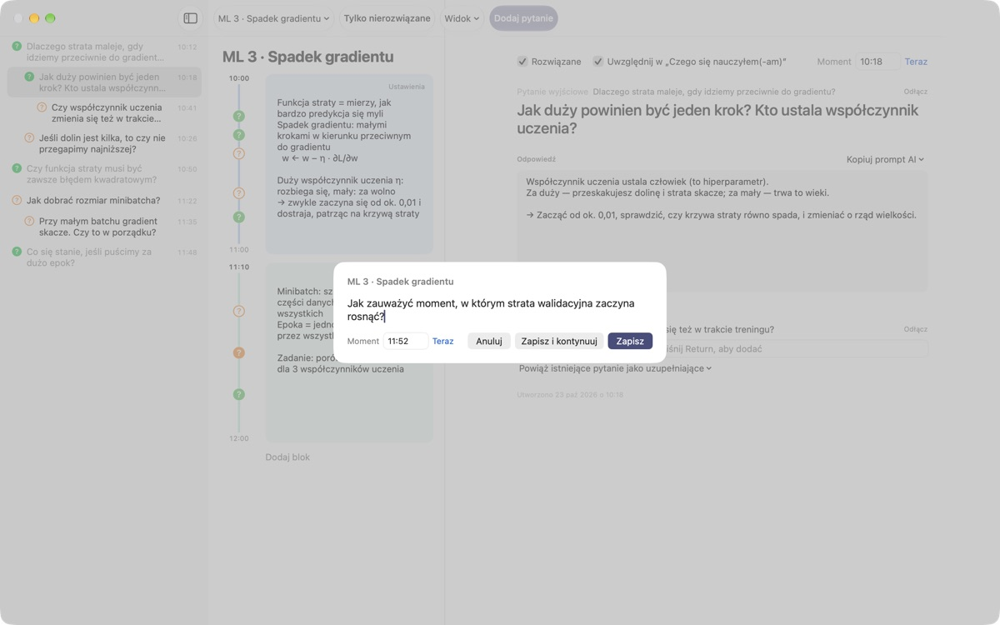
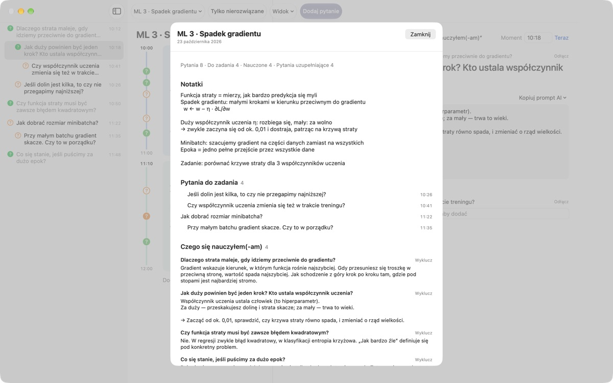
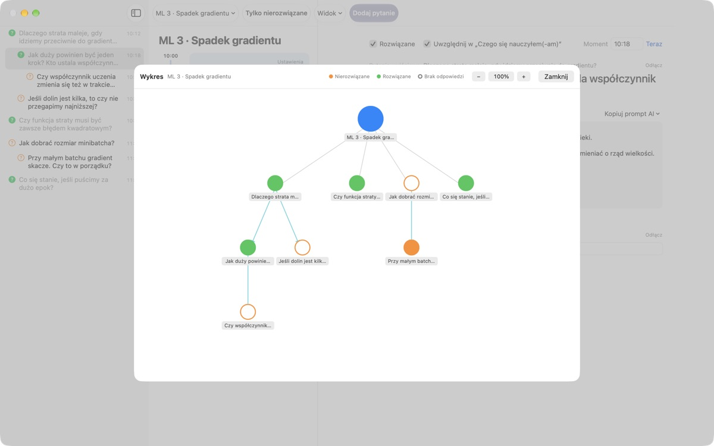

Żadne pytanie z wykładu
już ci nie ucieknie
Naciśnij ⌘⇧N, wpisz jedną linijkę, a pytanie trafi obok notatek z dokładnie tej minuty. Słuchasz dalej, odpowiedzi szukasz później.
Dla macOS 14 lub nowszego. Bez konta, wszystko zostaje na tym Macu.

Wypróbuj tutaj
Jesteś w połowie wykładu o uczeniu maszynowym. Wpisz pytanie i zapisz je, a obok bloku z tej godziny pojawi się ?. Ustaw godzinę spoza bloków, a powstanie dla niej nowy blok.
Po wykładzie pamiętasz jeszcze, o co chciałeś zapytać?
Ledwie pomyślisz „chwila, ale dlaczego?”, prowadzący jest już przy kolejnym slajdzie. Znak zapytania na marginesie nie pamięta, z którego wyjaśnienia się wziął, i pytanie zostaje bez odpowiedzi. LectureQ przypina każde pytanie do notatek z tamtej chwili i trzyma je na widoku, aż je rozgryziesz.
Pytaj, nie gubiąc kolejnego zdania
Okno wpisywania otworzysz przyciskiem Dodaj pytanie na pasku narzędzi albo skrótem ⌘⇧N. Godzina wpisuje się sama. Return zapisuje, a ⌘Return zapisuje i od razu szykuje miejsce na następne.
Każde pytanie pojawia się jako ? obok swojego bloku czasu, więc później od razu widzisz, z której części wykładu pochodzi.

Rozwiązane pytania stają się wiedzą
Zapisz odpowiedź własnymi słowami, oznacz pytanie jako rozwiązane, a trafi do sekcji Czego się nauczyłem(-am) w podsumowaniu. To, co wciąż otwarte, zostaje w Pytania do zadania, więc lista na następne zajęcia układa się sama.Kopiuj prompt AI w szczegółach pytania wkłada do schowka gotowy prompt z nazwą wykładu i notatkami z tamtej chwili. Wystarczy wkleić go do usługi AI, z której już korzystasz.

Zobacz, dokąd zaprowadziło cię myślenie
Pytania uzupełniające układają się z wcięciem pod pytaniem, z którego wyrosły, a wykres łączy je strzałkami. Kliknij węzeł, by przejść prosto do pytania.
W Stanie nauki zapiszesz, gdzie jesteś teraz, gdzie chcesz być po kursie i czego chcesz się nauczyć, i porównasz to.

Na start wystarczą trzy kroki
- 1
Utwórz wykład
W menu wykładów po lewej stronie paska narzędzi albo zaimportuj rozmowę zapisaną w Markdownie.
- 2
Zapisuj od razu
Naciśnij
⌘⇧N. Wystarczy jedna linijka, godzina już jest. - 3
Odpowiedz później
Wpisz odpowiedź i kliknij ?, by oznaczyć pytanie jako rozwiązane. Przejdzie do Czego się nauczyłem(-am).
Skróty klawiszowe
- ⌘⇧N
- Dodaj pytanie
- Return
- Zapisz
- ⌘Return
- Zapisz i pisz następne
- Esc
- Anuluj
- ⌘1
- Podsumowanie: pytania do zadania, czego się nauczyłeś, notatki
- ⌘2
- Wykres: pytania wyjściowe i uzupełniające
- ⌘3
- Bloki czasu: bloki wszystkich wykładów w kolejności
- ⌘4
- Stan nauki
- ⌘+ · ⌘- · ⌘0
- Większy tekst, mniejszy tekst, rozmiar domyślny
Wszystkie znajdziesz też w menu Widok.
Wszystkie funkcje są darmowe
Za darmo
- Szybkie pytania i notatki w blokach czasu
- Pytania uzupełniające i wykres
- Podsumowanie, przegląd bloków i Stan nauki
- Prompty AI w pięciu krokach, kopiowane do schowka
- Import rozmów z Markdowna
Wesprzyj twórcę
- Jeśli aplikacja ci pomaga, wyślij mały napiwek z Ustawień
- Napiwek nie odblokowuje niczego dodatkowego
Z napiwkiem czy bez, wszystko działa tak samo.
Bez reklam i bez konta. Twoje notatki zostają na tym Macu.
Częste pytania
Co oznaczają kolory znaku ?
Na liście pusty pomarańczowy krąg to pytanie jeszcze nierozwiązane, a wypełniony zielony to rozwiązane. Kliknij ?, by przełączyć, i włącz Tylko nierozwiązane na pasku narzędzi, żeby widzieć tylko otwarte. Przy bloku czasu kolor mówi, czy pytanie jest rozwiązane, a wypełniony krąg, że jest już odpowiedź.
Jak działają bloki czasu?
Po kliknięciu Dodaj blok nowy blok zaczyna się w tej chwili, a poprzedni kończy w tym miejscu. Gdy zapiszesz pytanie o godzinie, której nie obejmuje żaden blok, powstanie wokół niego nowy. Przyciskiem Ustawienia w prawym górnym rogu bloku zmienisz kolor, początek i długość albo go usuniesz. Jeśli sam usuniesz blok, ten wykład przestanie tworzyć bloki automatycznie.
Czym różni się „Rozwiązane” od „Czego się nauczyłem(-am)”?
Zaznaczając Rozwiązane w szczegółach pytania, wybierasz też, czy ma się liczyć do Czego się nauczyłem(-am). Trafiają tam tylko rozwiązane pytania, które uwzględnisz. Możesz je też usunąć lub przywrócić z podsumowania, a odpowiedź zostaje.
Jak działają prompty AI?
W szczegółach pytania otwórz Kopiuj prompt AI obok pola Odpowiedź i wybierz krok: Doprecyzuj pytanie, Znajdź odpowiedź, Zakwestionuj odpowiedź, Wyłuskaj pytania uzupełniające albo Oceń moją odpowiedź. Do schowka trafia prompt z nazwą wykładu, notatkami z tamtej chwili, stanem nauki i pytaniem wyjściowym. Sam tekst promptu jest na razie po koreańsku; większość usług AI i tak go rozumie, a odpowiedzi możesz poprosić po polsku. Do oceny odpowiedzi musisz najpierw wpisać własną. Aplikacja sama nigdy nie łączy się z żadną usługą AI.
Czy mogę zaimportować rozmowę zapisaną w Markdownie?
Wybierz Importuj z Markdown… w menu wykładów. # Tytuł staje się nazwą wykładu, a w każdej ## Sekcji pierwsze pytanie jest wyjściowe, kolejne uzupełniające. Wypowiedzi osoby, która w pliku mówi pierwsza, stają się pytaniami, a wypowiedzi pozostałych odpowiedzią na poprzednie pytanie. Plik źródłowy pozostaje nietknięty.
Jak usunąć pytanie lub wykład?
Kliknij pytanie na liście prawym przyciskiem i wybierz Usuń. Wykład usuniesz poleceniem Usuń bieżący wykład w menu wykładów; razem z nim znikną jego pytania i bloki. Tego nie da się cofnąć, więc najpierw zrób kopię tego, co ważne.
Gdzie są moje dane i jak zrobić kopię zapasową?
Wszystko zostaje na tym Macu i nigdzie nie jest wysyłane. Zamknij aplikację i skopiuj cały folder ~/Library/Containers/com.lectureq.LectureQ/Data/Library/Application Support/LectureQ/ razem z plikami -wal i -shm. Aplikacja wysyła tylko anonimowe statystyki użycia, jak wersja i dni uruchomienia, nigdy tego, co piszesz.
Tekst jest za mały.
⌘+ go powiększa, ⌘- zmniejsza, a ⌘0 przywraca domyślny rozmiar. Zakres to od 85% do 200%, a ustawienie jest zapamiętywane.
Na jakich Macach działa?
Na każdym Macu z macOS 14 lub nowszym. Kod źródłowy jest publiczny na GitHubie: M1zz/LectureQ.
Coś nie działa. Komu to zgłosić?
Wyślij opinię z Ustawień aplikacji (⌘,) albo napisz na adres poniżej. Podaj wersję macOS i to, co właśnie robiłeś, a szybciej to sprawdzimy.
Pytania lub uwagi? Napisz na mizzking75@gmail.com.